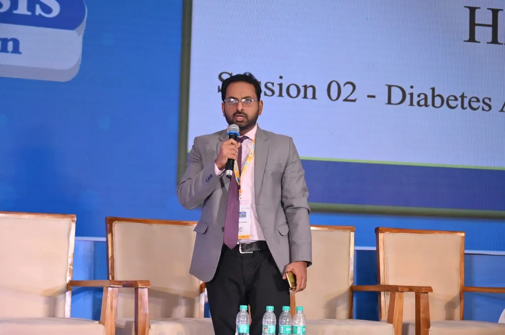

Diabetes Care with a Specialist
Diabetes is a lifelong condition, but good control is achievable with the right plan. As an endocrinologist and diabetologist, Dr. Suhas Khaire looks beyond the sugar reading. He reviews your medicines, diet, weight, activity, other health conditions and the risk of complications, then builds a treatment plan that fits your daily life.
Types of Diabetes We Treat
- Type 2 diabetes: new diagnosis, uncontrolled sugars, and treatment changes
- Type 1 diabetes in children and adults, including insulin regimens
- Gestational diabetes and diabetes during pregnancy
- Prediabetes and insulin resistance, to help prevent progression
- Diabetes linked to other hormonal conditions, such as thyroid, PCOS and steroid use
Our Approach to Diabetes Treatment
- Detailed evaluation of your history, reports and HbA1c
- Choosing the right oral medicines and adjusting doses
- Starting insulin when needed, with guidance on technique and dose adjustment
- Personalised diet plans and practical lifestyle advice
- Screening for complications affecting the eyes, kidneys, nerves, feet and heart
- Regular follow-up to keep sugars steady and avoid low sugar episodes

When Should You See a Diabetologist?
- Your sugar levels remain high despite medicines
- You have been advised to start insulin
- You get frequent low sugar episodes
- You are pregnant or planning pregnancy with diabetes
- Diabetes was diagnosed at a young age
Frequently Asked Questions
What is the difference between a diabetologist and an endocrinologist?
A diabetologist focuses on diabetes. An endocrinologist (DM Endocrinology) is trained in all hormone disorders, including diabetes, and can also manage related problems such as thyroid disease, PCOS and obesity. Dr. Suhas Khaire is an endocrinologist who also practises as a diabetologist.
Will I need insulin for Type 2 diabetes?
Not always. Many people with Type 2 diabetes are well controlled with lifestyle changes and tablets. Insulin may be advised when sugars stay high despite other treatment, or in situations such as pregnancy or illness. The doctor will discuss what is right for you.
Can Type 2 diabetes be reversed?
Some people, especially early after diagnosis, can bring their sugars into the normal range with significant weight loss and lifestyle change. This is called remission. It needs medical supervision and regular monitoring.
What should I bring to my diabetes consultation?
Bring your recent blood reports (including HbA1c), current prescriptions and medicines, and any home glucometer readings.